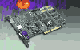
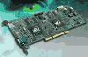
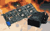

|
|
| 当前位置：电脑报电子版 > 1999 年 > 49 期 > 硬件周刊 > “毒”气冲天——Voodoo4、Voodoo５显卡前瞻 |
| 《 “毒”气冲天——Voodoo4、Voodoo5显卡前瞻 》 |
|  1999年显示芯片之间纷争的激烈程度比CPU主频速度提升还要火爆，一年之中几大显示芯片厂商都曾先后推出两代产品，并逐步进入主流市场。3dfx这个推出第一款真正3D芯片的王牌厂商，在1999年过得很不顺心，虽然他们的主力产品Voodoo3系列显示卡的性能仍保持了较高的水准，但缺少32位色深和大纹理、AGP纹理等重要3D特性的支持也招致了不少批评。相对而言，竞争对手nVidia的Riva
TNT2 Ultra以飞快的速度和完善的3D特性征服了挑剔的玩家，随之而来的Geforce更是给了3dfx更大的压力。3dfx本来计划在今年底推出下一代3D芯片Voodoo4，以对抗咄咄逼人的nVidia，但由于Voodoo4在研发上遇到某些问题，3dfx不得不宣布将Voodoo4推迟到明年。随后3dfx的CEO也宣布辞职，虽然他宣称和Voodoo4的发布延期无关，但明眼人不难看出其中的奥妙。 尽管如此， 3dfx的技术实力依然是让人无法轻视的，与S3和nVidia毫无征兆地推出新一代显示芯片的情形相似，在不久前COMDEX大展中，3dfx也突然宣布了他们的下一代产品：Voodoo4、Voodoo5(以下简称Voodoo4/5，其余类推)3D图形加速卡。 一、超强的3D芯片——VSA－100 与以往新产品推出不同，此次3dfx一次性宣布了两种产品：Voodoo4和Voodoo5，显然3dfx吸取了以往产品单一的教训，希望全面覆盖低端和高端市场，满足不同层次消费者的需要。之所以说Voodoo4和Voodoo5属于同一代产品，是因为它们采用的核心芯片相同，都是3dfx最新推出的VSA－100芯片。VSA（Voodoo Scalable Architecture，Voodoo可升级结构）芯片是新一代显示卡的灵魂，它采用0.25微米工艺制造，包含6层金属层，在芯片内部集成140万个晶体管，采用128位的2D引擎，内置350MHz 的RAMDAC，运行时钟速度为166MHz～183MHz，支持64MB显存。其技术特性包括：支持FXT1和DXTC纹理压缩技术 支持T－Buffer（双芯片或四芯片显卡） 24位Z/W Buffer，8位模板缓冲 32位RGBA渲染 支持最大纹理分辨率2048×2048 支持单通道单周期多纹理 支持Open GL，Direct3D，Glide等主流3D API 支持DVD硬件解压 除此之外，VSA－100还为当前和未来的Intel和AMD的CPU做了优化。令人意外的是，VSA－100仍然沿用了Voodoo3的0.25微米工艺而不是0.22微米工艺，但3dfx宣称他们采用的6层金属层工艺是增强的0.25微米工艺，而当前的0.22微米只用了5层金属层，那么这个基于0.25微米的VSA－100芯片是否比nVidia的0.22微米技术生产的芯片发热量更小、功率消耗更低目前尚不清楚。 二、VSA－100的核心技术 T－Buffer是VSA－100的核心技术，其实质就是全屏抗锯齿（FSAA，Full－Scene Spatial Anti－Aliasing），关于T－Buffer的详情，可参阅本报今年第38期相关文章，在此不再赘述了。 FXT1是3dfx开发的纹理压缩技术，它的压缩比为8∶1，比S3TC的6∶1来得高，而且具有跨平台运行的优势，但它能否推广普及，还要打一个问号。毕竟S3TC已经问世有一段时间了，获得了相当多游戏厂商的支持，并且授权给了微软公司，成为DirectX的标准功能，也就是我们平时所说的DXTC。 32位色深和大纹理的支持在我们预料之中，但玩家往往更关心从16位色到32位色，3D性能的衰减程度如何。如果性能下降太多，那么即使是32位色，也无推广的实际意义。根据有关资料显示，VSA－100的3D处理性能从16位色到32位色，下降幅度有45％之多，主要是同样的3D图形在处理时，32位色比16位色的数据量大了一倍，要占用更多的带宽，性能下降是无法避免的。不过，事实上同是32位色深支持的其他显示卡如ATI的Rage Fury Maxx性能衰减较小（至少没有45％这么多），究其原因，可能是因为VSA－100芯片引擎仍然是16位的。大家都应该记得，从Voodoo到Voodoo3显示卡，3dfx的芯片一直都是使用16位引擎，而VSA－100基于Voodoo3芯片，只是进行了一些优化工作，因而它的32位色深性能不尽如人意也在情理之中。 那么到底VSA－100做了哪些优化呢？我们都知道，Voodoo2和Voodoo3都有两条渲染流水线，即两个纹理单元，可是这种双像素流水线并不完善，它们的纹理单元只能为同一个像素工作，如果像素为单纹理的话，那么第二个纹理单元就只好闲置了，这样在不支持多纹理的游戏中，实际上的Voodoo2/3显示卡只发挥了一半的性能。在VSA－100芯片中3dfx完善了流水线，使纹理单元可以分别处理不同的像素。从理论上来说，在单纹理游戏中，VSA－100芯片的3D处理性能将是Voodoo3的两倍。新流水线还可实现单通道的凸凹映射特效，而在以前的处理过程中，必需两个通道才能完成。 三、Voodoo4/5显示卡的技术特征 新一代的Voodoo4和Voodoo5显示卡都基于VSA－100芯片，区别在于它们板载的芯片数目不同，因而两者在技术性能上也各不相同。1．Voodoo4 Voodoo4 4500显示卡是基于VSA－100芯片的低端产品（图1），有AGP和PCI两种版本。如果稍微注意的话，就会发现Voodoo4和Voodoo3的填充率基本相同，作为下一代的产品，这似乎难以想象。在COMDEX上，不少人都提出了同样的质疑，3dfx方面解释说VSA－100芯片的引擎进行了优化，而且Voodoo4的显存为32MB，两者综合起来可以使Voodoo4的性能比Voodoo3增长20％～30％。在AGP总线已经深入人心之际，Voodoo4 4500还有PCI版本也令人奇怪。也许是为了照顾没有AGP插槽的用户？ Voodoo4 4500并不具备T－Buffer功能，这本来是VSA－100芯片最大的卖点。原因恐怕也很简单，全屏抗锯齿需要耗费大量的填充率，Voodoo4 4500的整体性能还难以应付这样的处理需要，只好作罢。如果想要具有全屏抗锯齿的技术特性，对不起，请掏更多的钱买Voodoo5吧。 2．Voodoo5 Voodoo5显卡集成了两个VSA－100芯片，它是通过3dfx的SLI专利技术实现的。SLI就是交错扫描技术，早期的Voodoo2显示卡就支持两块卡SLI，分别处理奇数行和偶数行数据，从而使性能成倍地提高。双芯片意味着双倍的性能，但更大的发热量，更大的功率消耗也随着而来，为了确保显卡稳定工作，Voodoo5 5000和Voodoo5 5500都采用了单独的电源接口，可以和机箱电源相连，它和硬盘的供电方式是一样的。 T－Buffer的性能发挥也是一个玩家关心的问题，Voodoo4 4500因为性能不够而放弃了T－Buffer功能。谁都知道，以速度为王的3dfx宣称他们的目标是60fps，可是这个数字是T－buffer功能开启之前的速度还是之后呢？如果是没有T－buffer功能的速度，那么开启T－buffer功能后性能会下降多少？我们只有祈祷不要像32位色性能衰减那么多。  Voodoo5 5500和Voodoo5 5000基本没有区别，它们都采用了双芯片，只不过Voodoo5 5000是PCI插槽，只有32MB显存，而Voodoo5 5500是AGP插槽，64MB显存。有一点值得注意，虽然5500有64MB显存，但这些显存并不是共享的，而是供每个芯片使用。这样实际上每个芯片都只能使用32MB显存，也就是说，Voodoo5 5500的64MB和Voodoo4 4500单芯片的32MB是等同的。 除此之外，3dfx还有一款更高档的产品——Voodoo5 6000（图3），它显然是针对骨灰级发烧玩家的，但其600美元的天价也让人望而却步。Voodoo5 6000由于集成芯片众多，耗电量比Voodoo5 5500还大，其功率消耗为110W左右。我们知道，一般计算机整个系统也只需要235～300W功率，如果单单一个显卡就要耗去110W的功率，相信会有其他部件因供电不足而罢工。因此3dfx单独为Voodoo5 6000设计了专用电源，这种电源和笔记本电脑电源相似，请注意看图3的外接电源，3dfx称之为“Voodoo Volts”。 由于Intel的AGP标准不支持多芯片，所以Voodoo5 6000显示卡设置一个Intel的芯片，估计和AGP桥接有关。虽然Voodoo4/5 AGP版本支持AGP4×，令人失望的是Voodoo4/5仍然不支持AGP纹理，再加上显存是每个芯片专用，随着大纹理游戏越来越盛行，出现本地显存容纳不下纹理容量的可能不是没有，如果不能通过AGP总线储存在主存中，那么Voodoo4/5该怎么办呢？3dfx则认为AGP纹理技术应该结束了，AGP总线的速度一直是系统的瓶颈，所有的纹理都应该储存在本地内存。但实际上Voodoo5只有32MB显存，很难说它正好能够用，不过它幸好还有纹理压缩技术作后盾，而且在真正的显示卡上市的时候也许会有所改观。 四、结语 从VSA－100系列的各个产品而言，Voodoo4/5的性能都比较高，也具有很好的图像质量。特别是Voodoo5 6000，它应该是游戏玩家理想的选择。但令人遗憾的是几乎没有人愿意花那么多钱买一块显卡，而且多芯片并不一定是一个理想的解决方案。另外虽然我们估计Voodoo4/5不支持T＆L，现在也还没有支持T＆L的游戏（除了Quake 3 Arena），但T＆L确实是3D芯片的发展趋势，在圣诞节或明年将有相当数量的游戏支持T＆L，对于这些多边形极多的3D游戏，Voodoo4/5显然赶不上内建T＆L功能的Geforce处理得心应手。Voodoo4/5的问世也似乎晚了些，3dfx计划明年3月份推出Voodoo4显示卡，稍后再推出Voodoo5，可那时NV15也将同期上市，它不仅具有硬件T＆L功能，还有更高的填充率，而且价格不会像Voodoo5 6000这么贵。我们更期待的是“Ramapge”，3dfx继Voodoo4/5的下一代产品“Rampage”将采用全新的架构，也将在2000年上市，我们期待着，也许还有NV20，还有更多新一代的产品出现！
|
| 下载本期推荐软件 | 页 首 |
| CPCW网站版权所有，电脑报网站编辑部设计制作发布 |